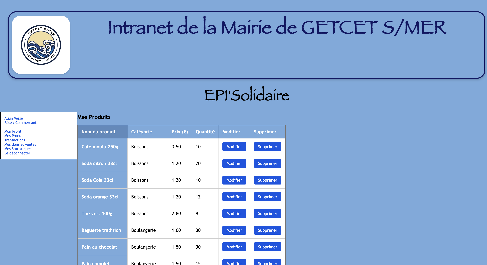

Projet en Binôme
Application Web EPI’Solidaire
5 Septembre — 7 Novembre 2025Épicerie Solidaire de GetCet-sur-Mer

Introduction & Collaboration
Dans le cadre de notre formation, nous avons développé en binôme l’application web EPI’Solidaire. Ce travail d'équipe a nécessité une coordination constante et l'utilisation d'outils de versioning (Git) pour fusionner nos développements respectifs tout en respectant une architecture MVC imposée.
Répartition du Travail
- Partie Commune : Analyse du cahier des charges, modélisation de la base de données (MCD/MLD) et mise en place de l'arborescence MVC.
- Mes Réalisations : Développement de l'interface "Commerçant", gestion du moteur de recherche dynamique, et implémentation du système de génération de PDF (FPDF).
- Sécurité : Mise en place conjointe des filtres contre les injections SQL et de la gestion sécurisée des sessions.
Technologies utilisées
 PHP MVC
PHP MVC
 MySQL
MySQL
 JavaScript
JavaScript
Bilan et Compétences
- Travail d'équipe : Collaboration efficace et gestion des conflits de code via Git.
- Analyse : Capacité à décomposer un besoin complexe pour le répartir à deux.
- Rigueur : Respect des normes de codage communes pour une maintenance simplifiée.